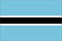

{kind=link}


![[Country map of Botswana]](../maps/bc-map.jpg)
| Botswana |  |
|
| | |
| Introduction |
Background: Formerly the British protectorate of Bechuanaland, Botswana adopted its new name upon independence in 1966. The economy, closely tied to South Africa's, is dominated by cattle raising and mining.
| Geography |
Location: Southern Africa, north of South Africa
Geographic coordinates: 22 00 S, 24 00 E
Map references: Africa
Area:
total:
600,370 sq km
land:
585,370 sq km
water:
15,000 sq km
Area - comparative: slightly smaller than Texas
Land boundaries:
total:
4,013 km
border countries:
Namibia 1,360 km, South Africa 1,840 km, Zimbabwe 813 km
Coastline: 0 km (landlocked)
Maritime claims: none (landlocked)
Climate: semiarid; warm winters and hot summers
Terrain: predominantly flat to gently rolling tableland; Kalahari Desert in southwest
Elevation extremes:
lowest point:
junction of the Limpopo and Shashe Rivers 513 m
highest point:
Tsodilo Hills 1,489 m
Natural resources: diamonds, copper, nickel, salt, soda ash, potash, coal, iron ore, silver
Land use:
arable land:
1%
permanent crops:
0%
permanent pastures:
46%
forests and woodland:
47%
other:
6% (1993 est.)
Irrigated land: 20 sq km (1993 est.)
Natural hazards: periodic droughts; seasonal August winds blow from the west, carrying sand and dust across the country, which can obscure visibility
Environment - current issues: overgrazing; desertification; limited fresh water resources
Environment - international agreements:
party to:
Biodiversity, Climate Change, Desertification, Endangered Species, Hazardous Wastes, Law of the Sea, Nuclear Test Ban, Ozone Layer Protection, Wetlands
signed, but not ratified:
none of the selected agreements
Geography - note: landlocked; population concentrated in eastern part of the country
| People |
Population:
1,576,470
note:
estimates for this country explicitly take into account the effects of excess mortality due to AIDS; this can result in lower life expectancy, higher infant mortality and death rates, lower population and growth rates, and changes in the distribution of population by age and sex than would otherwise be expected (July 2000 est.)
Age structure:
0-14 years:
41% (male 321,766; female 318,304)
15-64 years:
55% (male 417,734; female 453,947)
65 years and over:
4% (male 26,436; female 38,283) (2000 est.)
Population growth rate: 0.76% (2000 est.)
Birth rate: 29.63 births/1,000 population (2000 est.)
Death rate: 22.08 deaths/1,000 population (2000 est.)
Net migration rate: 0 migrant(s)/1,000 population (2000 est.)
Sex ratio:
at birth:
1.03 male(s)/female
under 15 years:
1.01 male(s)/female
15-64 years:
0.92 male(s)/female
65 years and over:
0.69 male(s)/female
total population:
0.94 male(s)/female (2000 est.)
Infant mortality rate: 61.68 deaths/1,000 live births (2000 est.)
Life expectancy at birth:
total population:
39.27 years
male:
38.63 years
female:
39.93 years (2000 est.)
Total fertility rate: 3.8 children born/woman (2000 est.)
Nationality:
noun:
Motswana (singular), Batswana (plural)
adjective:
Motswana (singular), Batswana (plural)
Ethnic groups: Batswana 95%, Kalanga, Basarwa, and Kgalagadi 4%, white 1%
Religions: indigenous beliefs 50%, Christian 50%
Languages: English (official), Setswana
Literacy:
definition:
age 15 and over can read and write
total population:
69.8%
male:
80.5%
female:
59.9% (1995 est.)
| Government |
Country name:
conventional long form:
Republic of Botswana
conventional short form:
Botswana
former:
Bechuanaland
Data code: BC
Government type: parliamentary republic
Capital: Gaborone
Administrative divisions: 10 districts and four town councils*; Central, Chobe, Francistown*, Gaborone*, Ghanzi, Kgalagadi, Kgatleng, Kweneng, Lobatse*, Ngamiland, North-East, Selebi-Pikwe*, South-East, Southern
Independence: 30 September 1966 (from UK)
National holiday: Independence Day, 30 September (1966)
Constitution: March 1965, effective 30 September 1966
Legal system: based on Roman-Dutch law and local customary law; judicial review limited to matters of interpretation; has not accepted compulsory ICJ jurisdiction
Suffrage: 18 years of age; universal
Executive branch:
chief of state:
President Festus MOGAE (since 1 April 1998) and Vice President Seretse Ian KHAMA (since NA April 1998); note - the president is both the chief of state and head of government; vice president KHAMA is on a one-year leave of absence, effective 1 January 2000, but retains the title of vice president
head of government:
President Festus MOGAE (since 1 April 1998) and Vice President Seretse Ian KHAMA (since NA April 1998); note - the president is both the chief of state and head of government; vice president KHAMA is on a one-year leave of absence, effective 1 January 2000, but retains the title of vice president
cabinet:
Cabinet appointed by the president
elections:
president elected by the National Assembly for a five-year term; election last held 16 October 1999 (next to be held NA October 2004); vice president appointed by the president
election results:
Festus MOGAE elected president; percent of National Assembly vote - 61.3%
Legislative branch:
bicameral Parliament consists of the House of Chiefs (a largely advisory 15-member body consisting of the chiefs of the eight principal tribes, four elected subchiefs, and three members selected by the other 12) and the National Assembly (44 seats, 40 members are directly elected by popular vote and 4 appointed by the majority party; members serve five-year terms)
elections:
National Assembly - elections last held 16 October 1999 (next to be held NA October 2004)
election results:
percent of vote by party - BDP 61.3%, other 38.7%; seats by party - BDP 33, other 7
Judicial branch: High Court; Court of Appeal
Political parties and leaders:
Botswana Democratic Party or BDP [Festus MOGAE]; Botswana National Front or BNF [Kenneth KOMA]; Botswana Congress Party or BCP [Michael DINGAKE]; Botswana People's Party or BPP [Knight MARIPE]
note:
main parties are: BDP, BNF, BCP; other minor parties joined forces in 1999 to form the Botswana Alliance Movement or BAM [Kenneth KOMA, chairman] but did not capture any parliamentary seats; the BAM parties are: the United Action Party [Ephraim Lepetu SETSHWAELO], the Social Democratic Union, the Independence Freedom Party [Motsamai MPHO], and the Botswana Progressive Union [Gideon KAELO]
International organization participation: ACP, AfDB, C, CCC, ECA, FAO, G-77, IBRD, ICAO, ICFTU, ICRM, IDA, IFAD, IFC, IFRCS, ILO, IMF, Intelsat, Interpol, IOC, ISO, ITU, NAM, OAU, OPCW, SACU, SADC, UN, UNCTAD, UNESCO, UNIDO, UPU, WCL, WFTU, WHO, WIPO, WMO, WToO, WTrO
Diplomatic representation in the US:
chief of mission:
Ambassador Kgosi SEEPAPITSO IV
chancery:
1531-1533 New Hampshire Avenue NW, Washington, DC 20036
telephone:
[1] (202) 244-4990
FAX:
[1] (202) 244-4164
Diplomatic representation from the US:
chief of mission:
Ambassador John E. LANGE
embassy:
address NA, Gaborone
mailing address:
P. O. Box 90, Gaborone
telephone:
[267] 353982
FAX:
[267] 356947
Flag description: light blue with a horizontal white-edged black stripe in the center
| Economy |
Economy - overview: Agriculture still provides a livelihood for more than 80% of the population but supplies only about 50% of food needs and accounts for only 3% of GDP. Subsistence farming and cattle raising predominate. The sector is plagued by erratic rainfall and poor soils. Diamond mining and tourism also are important to the economy. Substantial mineral deposits were found in the 1970s and the mining sector grew from 25% of GDP in 1980 to 38% in 1998. Unemployment officially is 21% but unofficial estimates place it closer to 40%. The Orapa 2000 project, which will double the capacity of the country's main diamond mine, will be finished in early 2000. This will be the main force behind continued economic expansion.
GDP: purchasing power parity - $5.7 billion (1999 est.)
GDP - real growth rate: 6.5% (1999 est.)
GDP - per capita: purchasing power parity - $3,900 (1999 est.)
GDP - composition by sector:
agriculture:
4%
industry:
46% (including 36% mining)
services:
50% (1998 est.)
Population below poverty line: 47% (1999 est.)
Household income or consumption by percentage share:
lowest 10%:
NA%
highest 10%:
NA%
Inflation rate (consumer prices): 7.7% (1999 est.)
Labor force: 235,000 formal sector employees (1995)
Labor force - by occupation: 100,000 public sector; 135,000 private sector, including 14,300 who are employed in various mines in South Africa; most others engaged in cattle raising and subsistence agriculture (1995 est.)
Unemployment rate: 20%-40% (1999 est.)
Budget:
revenues:
$1.6 billion
expenditures:
$1.8 billion, including capital expenditures of $560 million (FY96/97)
Industries: diamonds, copper, nickel, coal, salt, soda ash, potash; livestock processing
Industrial production growth rate: 4.6% (FY92/93)
Electricity - production: 1 billion kWh (1998)
Electricity - production by source:
fossil fuel:
100%
hydro:
0%
nuclear:
0%
other:
0% (1998)
Electricity - consumption: 1.619 billion kWh (1998)
Electricity - exports: 0 kWh (1998)
Electricity - imports: 689 million kWh (1998)
Agriculture - products: sorghum, corn, millet, pulses, groundnuts (peanuts), beans, cowpeas, sunflower seed; livestock
Exports: $2.36 billion (f.o.b., 1999 est.)
Exports - commodities: diamonds 72%, vehicles, copper, nickel, meat (1998)
Exports - partners: EU 74%, Southern African Customs Union (SACU) 21%, Zimbabwe 3% (1996)
Imports: $2.05 billion (f.o.b., 1999 est.)
Imports - commodities: foodstuffs, machinery and transport equipment, textiles, petroleum products
Imports - partners: Southern African Customs Union (SACU) 78%, Europe 8%, Zimbabwe 6% (1996)
Debt - external: $651 million (1998)
Economic aid - recipient: $73 million (1995)
Currency: 1 pula (P) = 100 thebe
Exchange rates: pulas (P) per US$1 - 4.6168 (January 2000), 4.6244 (1999), 4.2259 (1998), 3.6508 (1997), 3.3242 (1996), 2.7722 (1995)
Fiscal year: 1 April - 31 March
| Communications |
Telephones - main lines in use: 78,000 (1998)
Telephones - mobile cellular: NA
Telephone system:
sparse system
domestic:
small system of open-wire lines, microwave radio relay links, and a few radiotelephone communication stations
international:
two international exchanges; digital microwave radio relay links to Zambia, Zimbabwe, and South Africa; satellite earth station - 1 Intelsat (Indian Ocean)
Radio broadcast stations: AM 7, FM 15, shortwave 5 (1998)
Radios: 237,000 (1997)
Television broadcast stations: 0 (1997)
Televisions: 31,000 (1997)
Internet Service Providers (ISPs): 2 (1999)
| Transportation |
Railways:
total:
971 km
narrow gauge:
971 km 1.067-m gauge (1995)
Highways:
total:
18,482 km
paved:
4,343 km
unpaved:
14,139 km (1996 est.)
Ports and harbors: none
Airports: 92 (1999 est.)
Airports - with paved runways:
total:
10
2,438 to 3,047 m:
2
1,524 to 2,437 m:
7
914 to 1,523 m:
1 (1999 est.)
Airports - with unpaved runways:
total:
82
1,524 to 2,437 m:
4
914 to 1,523 m:
57
under 914 m:
21 (1999 est.)
| Military |
Military branches: Botswana Defense Force (includes Army and Air Wing), Botswana National Police
Military manpower - military age: 18 years of age
Military manpower - availability:
males age 15-49:
373,990 (2000 est.)
Military manpower - fit for military service:
males age 15-49:
196,572 (2000 est.)
Military manpower - reaching military age annually:
males:
19,132 (2000 est.)
Military expenditures - dollar figure: $61 million (FY99/00)
Military expenditures - percent of GDP: 1.2% (FY99/00)
| Transnational Issues |
Disputes - international: dispute with Namibia over uninhabited Kasikili (Sidudu) Island in Linyanti (Chobe) River resolved by the ICJ in favor of Botswana (13 December 1999); at least one other island in Linyanti River is contested